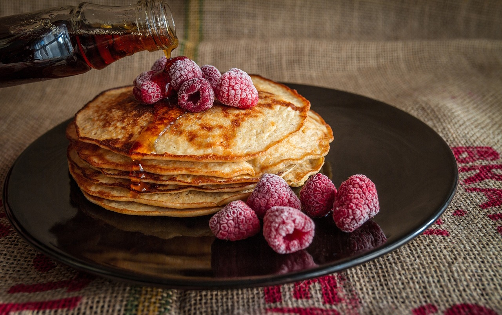

Nāc paēst gardu maltīti pie mums!
Mēs lietojam tikai augstākās kvalitātes sastavdaļas.
Mūsu savstavdaļas tiek svaigi piegādātas katru rītu pirms ēdnīca atverās.


Tik pat gards ēdiens kā majās
Mūsu pavāri gatavo ēdienu kā mājās un arī dod kārtīgas porcijas lai var kārtīgi paēst.
Mēs atbalstam Latvijas lauksaimniekus un miesniekus.
Visas mūsu savstāvdaļas ir nākušas no pašu zemes, Dārzeņi no Jelgavas, Gaļa no Rīgas, Augļi un ogas no Salaspils.